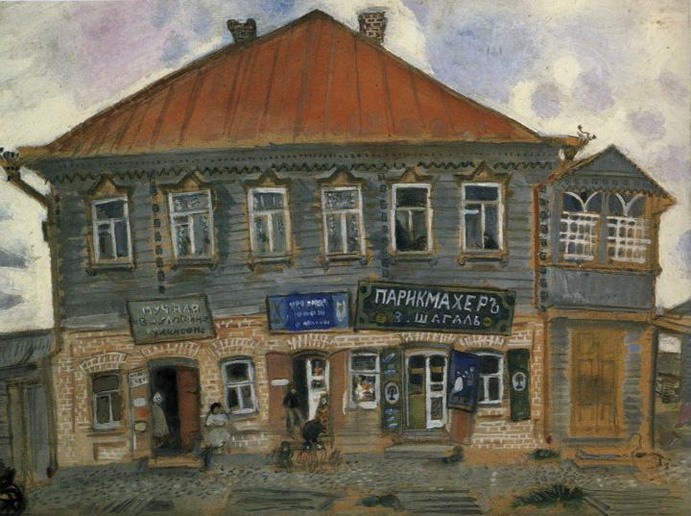
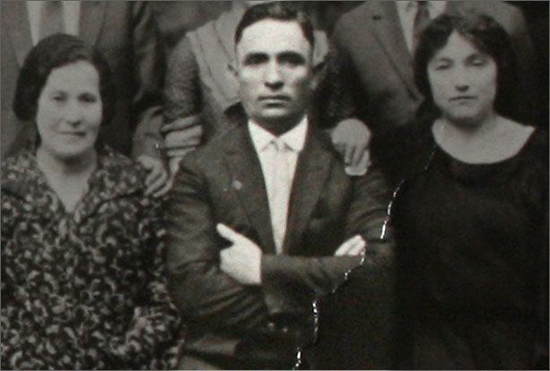
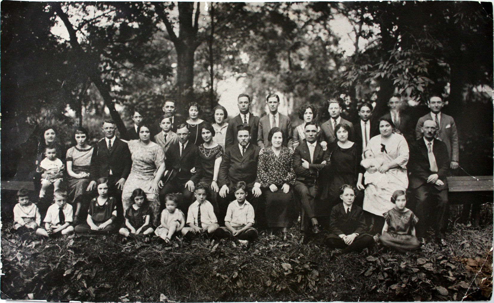
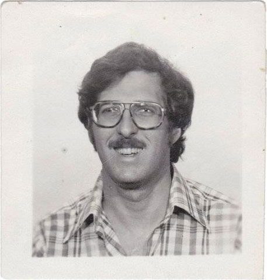

I was born around 1852 in Liozna, a shtetl in present-day Belarus that Marc Chagall described as the color of shoes and potatoes.
It's not clear who my parents were, or how they ended up in Liozna, but it's likely they were members of Chabad, a branch of Hasidic Judaism founded in Liozna at the end of the 18th century. (Chabad later moved its headquarters to Lubavitch, Russia, before relocating to Brooklyn during World War II.)
Today Liozna is better known as the birthplace of Chagall. In fact, my great great grandson likes to imagine that I was acquainted with Chagall's father. After all, we both worked in food: I as a shokhet (a ritual slaughterer); the elder Chagall sold herring.
In Liozna I lived with my wife Chana and our first son Leibl. When pogroms spread in 1881, we left Liozna and joined a wave of Jewish emigration to the West, stopping in Minsk in 1883, where our second son Yechiel was born, and eventually settled in Pandelys, near Chana's parents in Birzai. The entire region, from Liozna to Birzai and beyond, was part of the Russian Pale of Settlement, where Jewish movement was closely restricted.
Eventually we made it as far west as Chicago.
Our second son Yechiel went first, in 1902, by way of London. In Chicago he became “Max" and worked as a "customer peddler," delivering goods by horse and carriage to people on the outskirts of the city.
Chana and I and our other young children followed in 1906, and by 1912 all of my children and grandchildren had made it to Chicago, including my grandson Berka (Ben) Malkin, the father of Leonard Malkin, who is the father of Elliott Malkin, who is writing this on my behalf.
We would evade a fate far worse than the pogroms. When the Nazis came to Birzai they tied the local shokhet's beard to a horse and dragged him to his death throughout the town.
{kind=link}
I died in 1916, so didn’t live to see my son Max become a major real estate developer in Evergreen Park, helping transform an unpaved farming community into a full fledged suburb (at least until the Depression hit, at which point he had to find other work.) And I didn’t live to see all six of my children pose with their children at Max’s picnic grove in 1923.
I was buried in the old Lubavitch section of Waldheim Jewish Cemetery, along with other members of our synagogue, including Leo, who at some point became the shamas (the caretaker).
Max is buried there as well, even though he went on to become a board member, and later president, of a prominent Conservative synagogue called B’nai Bezalel on Chicago’s south side. Most of my grandchildren also became Conservative, a far more Americanized brand of Judaism.
Like many of his cousins, my great grandson Leonard also attended B’nai Bezalel but as an adult switched over to an even more progressive Reform synagogue. As for my great great grandson Elliott, I probably wouldn’t even recognize him as a Jew.
- Zalman Yosel Baruch Malkin
Sources:
1906 Zalman Malkin Ship Manifest
1907 Leibl Bruschow Ship Manifest
1909 Max Malkin Declaration of Intent
1910 Max Malkin US Census
1910 Salmin Malkin US Census
1911 Leo Malkin Declaration of Intent
1912 Ginda Bruchow Ship Manifest
1913 Leo Malkin Petition for Naturalization / Denied
1913 Max Malkin Petition for Naturalization
1914 Anne Malkin Death Certificate
1915 Mendel Malkin Declaration of Intent
1916 Leo Malkin Petition for Naturalization
1916 Solomon Malkin Death Certificate
1917 Mendel Malkin World War I Draft Registration Card
1920 Leo Malkin US Census
1920 Max Malkin US Census
1929 Leo Malkin Death Certificate
1957 Max Malkin Synagogue President
1970 Max Malkin Death Notice
{kind=link}